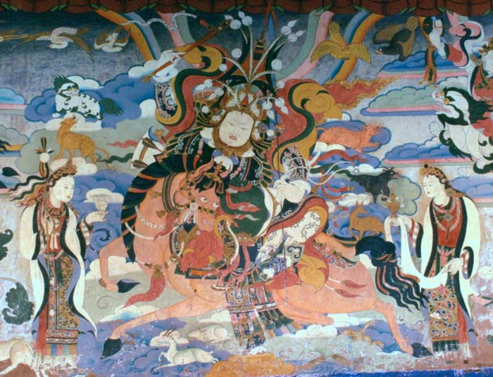

EPIC KINGSHIP
The hero of the longest epic in the world — still sung by living bards — returned by retelling-as-proof, and his technique is epic kingship itself: he names demons, rallies hosts, and endures like the mountain.

EPIC KINGSHIP
The hero of the longest epic in the world — still sung by living bards — returned by retelling-as-proof, and his technique is epic kingship itself: he names demons, rallies hosts, and endures like the mountain.
Feature map
Level-by-level features, as the figure refined them.
The Naming
Bonus action · 2 CE.
Tier IV Mythic · Striker/Tank · suggested CE ability STR · Primary verb: Name. Technique DC = 8 + proficiency bonus + STR modifier. A king names things, and the named thing obeys the name. Epic kingship rests on three pillars: the Naming (legibility), the Host (the muster of Ling), and the Mountain (endurance). Named. When Gesar uses The Naming on a creature, it becomes Named for 1 minute: Gesar and his allies learn its damage resistances, immunities, and vulnerabilities, and their attacks against it deal an additional 1d4 force damage. A creature can bear only one Naming at a time. (Not mind control. Legibility — the epic has met this demon before.)
Name one creature he can see within 120 ft as a demon of the epic, speaking its demon-name aloud before witnesses. It becomes Named. (A named demon is a dead demon. The epic is clear on this point.)
The Thirty Ride
Action · 3 CE · 1 minute.
Two spectral warriors of Ling muster at his side (AC 15, HP 20, speed 40 ft). On his turn, he may use a bonus action to command each warrior to make one melee attack (+PB + STR to hit, 1d8 + STR slashing damage). They act on his initiative, after him. (Where the king goes, the host musters.)
Deed Numbered
Passive.
When he reduces a creature to 0 hit points, he gains temporary HP equal to his STR modifier + PB, and willing creatures within 30 ft gain +1 to saving throws until the start of his next turn. (The bard counts it. The host stands taller.)
Demon-Slayer's Grip
Action · 2 CE.
Make a grapple check with advantage against a creature within reach. While grappling a Named creature, his weapon attacks against it score critical hits on a roll of 19–20. (He learned the demon's secret by getting close. The epic recommends it.)
The Mountain Endures
Passive.
When he takes damage, reduce it by his proficiency bonus. He cannot be knocked prone while conscious. ("Gesar endured like the mountain endures the storm.")
The Host Musters
Action · 5 CE.
Up to PB willing creatures within 60 ft gain temporary HP equal to his CHA modifier + PB and may move up to half their speed without provoking opportunity attacks. (The king calls. Ling answers.)
The Straw King
Reaction · 3 CE · usable PB times per long rest.
When he is hit by an attack, the blow finds a straw man — the attack misses instead. (The trickster-king was never standing there.)
Maximum, Domain, or equivalent.
Capstone material.
Maximum: Lutzen Falls Again
Gesar crosses the distance in a single bound — make one melee weapon attack with advantage against a creature within 60 ft. On a hit, it deals an additional 10d10 force damage. If the target is Named, it must succeed on a Constitution saving throw against his technique DC or be stunned until the end of its next turn and knocked prone. (The epic's oldest ending, reused.)
Ling Assembled: The Epic Sung Aloud
The muster-field at dawn, thirty banners, the bard's voice over all of it. Inside, the sure-hit is All Are Named — every hostile creature inside is treated as Named. Additionally, at initiative 20, the epic names them: each hostile creature inside must succeed on a Charisma saving throw against his technique DC or have its current hit points spoken aloud to all present and be unable to become hidden or invisible until the next initiative 20. His spectral warriors may be commanded without spending a bonus action while the domain stands. (The epic names things. Named things cannot hide.)
- Clash points
- 800
- Burnout
- 5 rounds
- Duration
- 2 minutes
- Radius
- 60-ft radius
- Activation ✦
- full-turn action
- CE cost ✦
- 20
✦ Canon: figure Domains are Specific Domains — the stated profile governs, not the player point-unlock table.
The Epic Does Not End
Once per long rest, when he would be reduced to 0 hit points, he instead drops to 1 hit point. Additionally, while at least one willing ally within 120 ft spends its reaction at the start of its turn to keep singing, he cannot be reduced below 1 hit point; the singing ends as soon as no ally spends its reaction. (Kill the king and the song keeps him. Silence the singers first.)
Build-defining options.
Historical-figure techniques grant no feats — the figure's art is complete as written, and the builder's feat picker excludes these techniques. Take the progression as the build.
Edge cases and shared systems.
Campaign canon notes